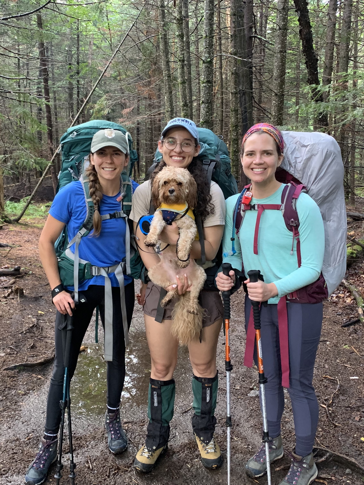
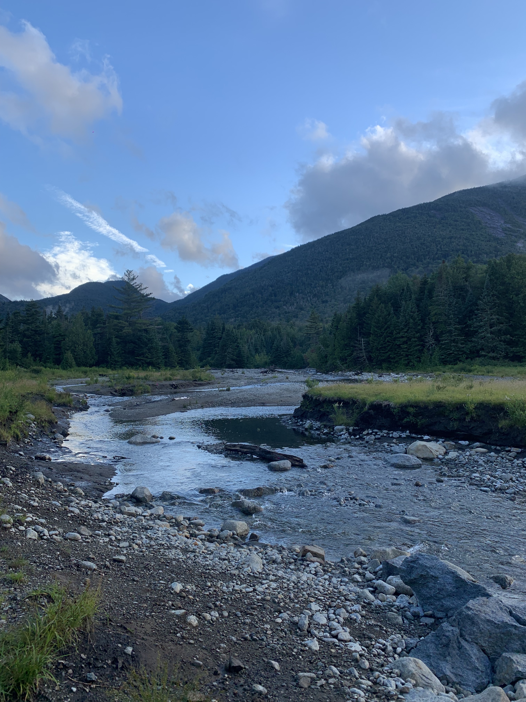
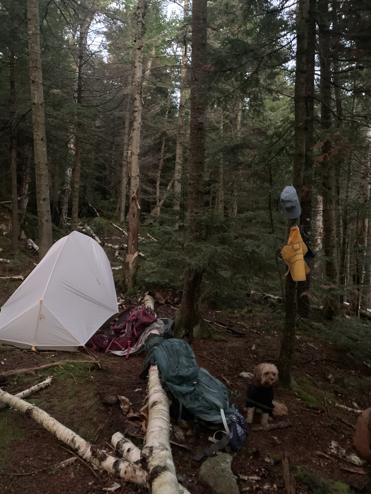
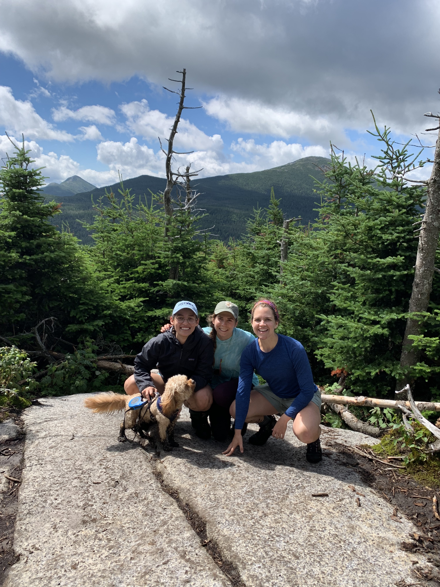
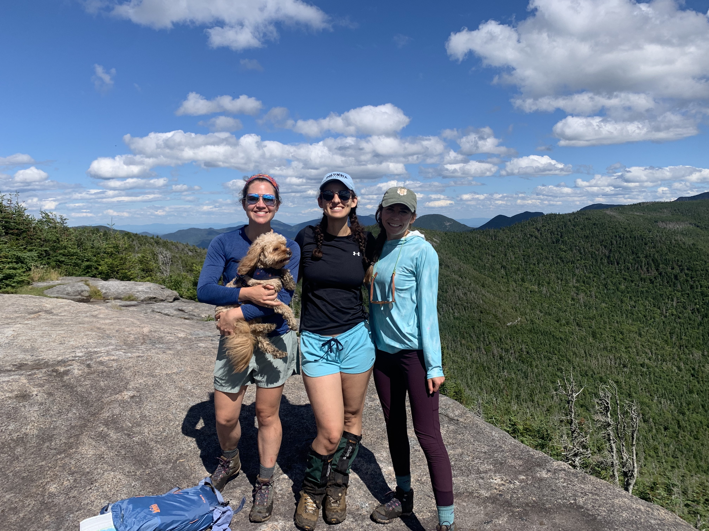
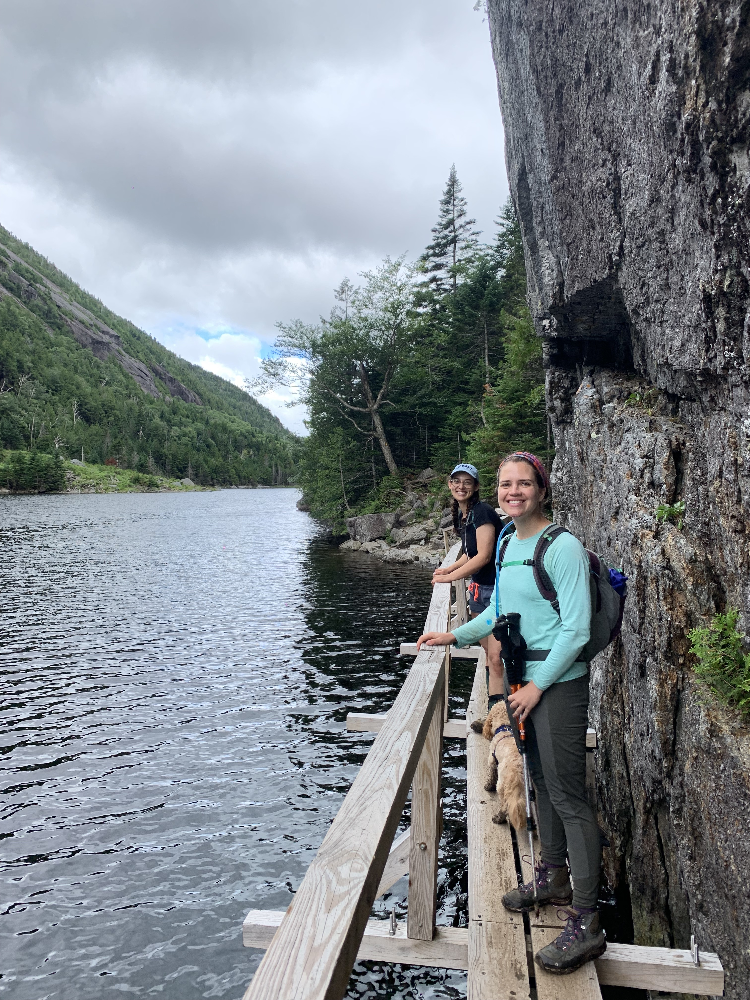
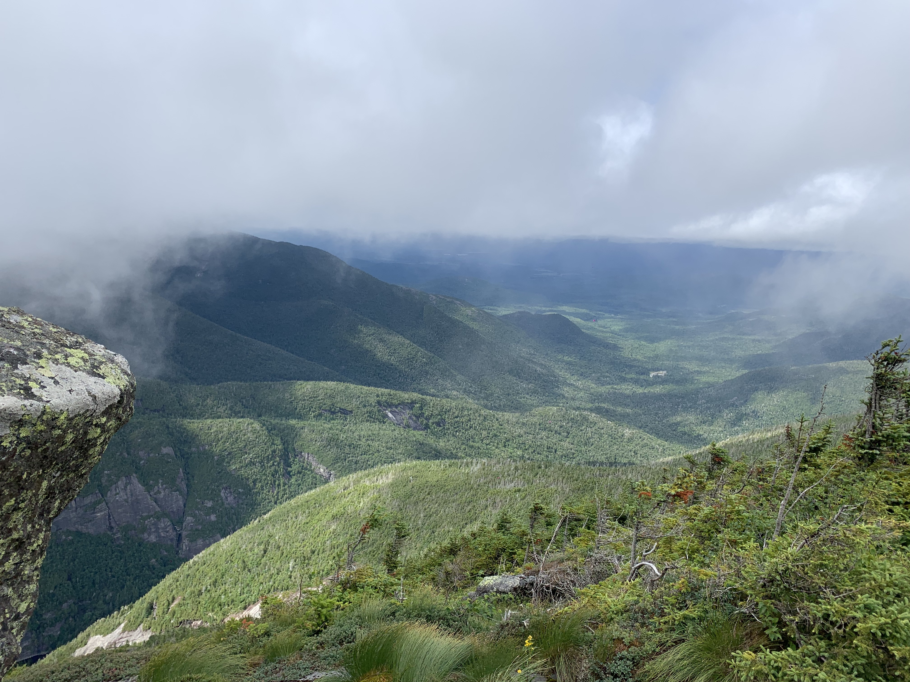
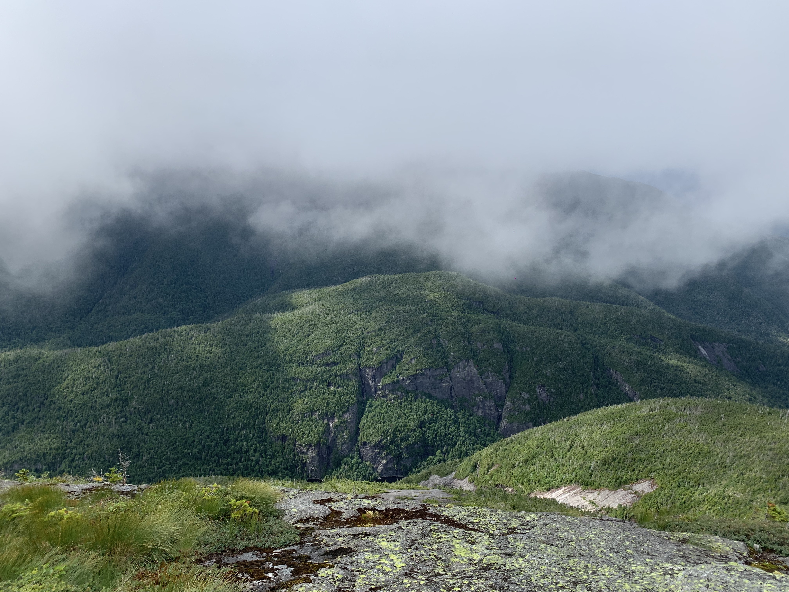
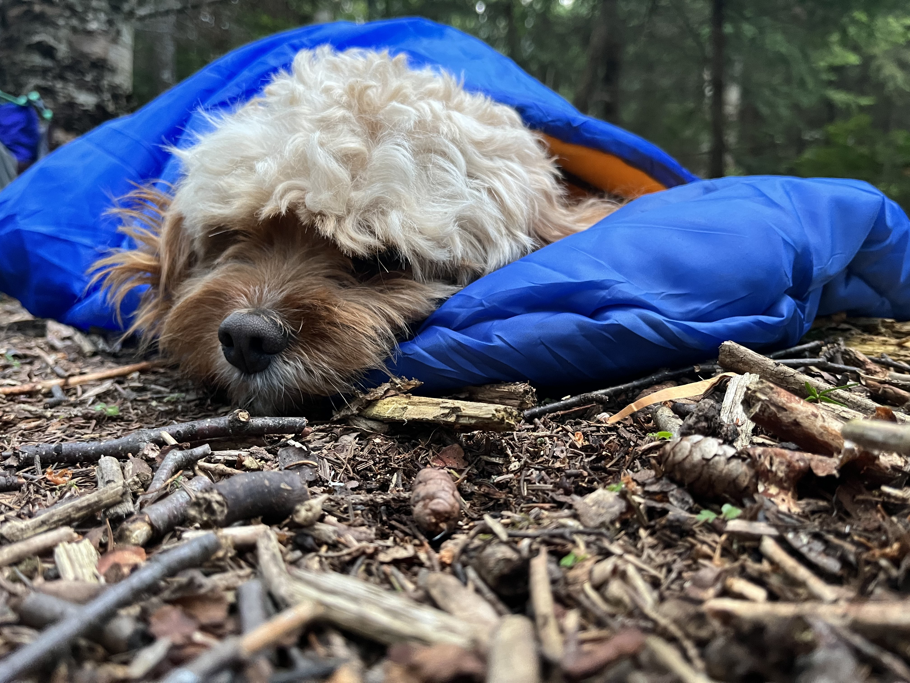

Well friends, I am officially in pursuit of the Adirondacks 46er title! We love a semi-pointless life goal.
Despite terrible pre-planning and 24 hours straight of pouring rain, a previous Adirondacks backpacking trip in 2021 was so much fun that we decided to go back to the same area in 2022. Here’s the itinerary we did to check off three more peaks (Phelps, Table Top, and Colden) on a three-night backcountry trip in July. I’ve also included our gear list at the end of the post in case that’s helpful for someone planning a similar trip.

Itinerary
Thursday 7/28
My travel companions (two women and a dog) and I caught a train from Penn Station to Newark Airport at 8:40am. We arrived at Thrifty car rentals around 9:10am and after a minor snaffu over which credit card gave us collision insurance, we left Newark at 10am. Our destination was the Adirondack Loj / High Peaks Information Center.
Our drive was uneventful, although we did stop at Valley Grocery in Keene Valley, NY around 3pm because one of us still needed trail food. I highly recommend this place! They know their consumer market is largely hikers and they nail it. Valley Grocery had all the last minute camping supplies and trail food you could imagine.
We got to the Adirondack Loj area at 4pm, just in time for a deluge of rain. We waited out the storm under the High Peaks Information shelter, where we traded in our bear canisters for the park’s recommended ones (it’s free to use theirs if you show them you brought your own). We divided up our packs and took an obligatory start-of-the-trip photo.



We started the 3 mile hike in at 6pm and arrived to our campsite by 7:30pm. We set up camp, cooked dinner, and went to bed soon after, since none of us had slept much the night before. This was the route to our campsite:
A few notes on the campsite: camping in the High Peaks region is first-come-first-serve, and only at designated campsite. This campsite is right by Phelps Brook (great for refilling water and bathing, although it’s quite cold). If you climb up the hill for the campsite past the initial tent area, there are more spots to place tents and it is much more remote. This was our favorite campsite from our 2021 trip, and it did not disappoint in 2022.
Friday 7/29
Friday morning we packed day packs and left at 9am. We hiked up Table Top Mountain (4413 ft). It’s got a cute summit approximately the size of a large dinner table. The view at the top is pleasant, although fairly limited.



We hiked back down the way we’d come, and made a diversion to Indian Falls for lunch. There’s a giant rock slab and grassy patch above the waterfall that’s nice for hanging out, but make sure you walk below the rock to see the actual falls.
Next, we headed back towards our campsite and went up Phelps Mountain (4160 ft). Both Phelps and Table Top were a bit muddy and felt similar in difficulty. Phelps had a rather large summit, an excellent view, and it was quite empty.


We hiked back to camp (an easy downhill walk) and arrived before 5pm. Just in time to make our dehydrated biscuits and gravy – mmm!
Saturday 7/30
We claimed we would leave earlier on Saturday, but we left at 10am. Oops. We hiked around Avalanche Lake, which contains lots of fun scrambles and bridges running along the scrambles. We had lunch next to Lake Colden before preparing for a steep uphill climb.



Our up-and-over hike up Mount Colden (4715 ft) was definitely the hardest section of the weekend. The rock was steep (grades of 50% at times) and wet. There wasn’t anything to grip your hiking poles into. Nonetheless, we didn’t find it too difficult of a hike, all things considered. The summit was long and gorgeous, with a stunning view of Avalanche Pass. The summit was also extremely cold, even in mid-July. We waited about 30 minutes for a cloud to “pass”, and briefly had great views. After a while we realized we were actually in the cloud, and once we hiked down the mountain a bit (this time down the less-steep side), it was a bit warmer with a much better view.




We took our sweet time walking back, featuring one fall into a mud pit, and got back to camp around 6pm. Our little wolf settled into his sleeping bag and we enjoyed another delicious meal of dehydrated curry.


Saturday 7/31
We hiked out at 9am and arrived back at our car by 11am. It took a while to get back into NYC with traffic, but we arrived at Newark at 7pm to drop off our rental car and head home. A successful trip!
Gear list
This was our packing list for 3 nights and 3 days in the backcountry for 3 women (dog gear list not included):
Group gear
- tents (2p, 1p)
- water purification drops
- stove
- fuel (used almost one medium container)
- tea kettle for pouring
- pour over coffee maker
- leatherman
- dish soap/scrubby
- compass/topography map
- bear canister
- trowel
- plastic baggies
- lighters
- first aid kid
- card game
- portable charger/cord
- bug spray
- hand sanitizer
- sunscreen (face/body)
- toothpaste
- six 2p dinners
Individual gear
- breakfasts, lunch food, snacks
- headlamp, extra batteries
- day pack
- spf chapstick
- spoon
- cup(s) for coffee/nuuns
- bowl
- camelback
- nalgene bottle
- shirt(s) for hiking
- pant(s) for hiking
- hiking boots
- socks
- rain coat/gaitors/rain pants
- baseball cap/sun protection
- sunglasses
- scrunchies
- sports bras/underwear
- sweats/shirt for sleeping
- sleeping bag
- sleeping mat
- stuff sacks or trash bags for rain
- hiking poles
- bandana/toilet paper/tampons/diva cup
- toothbrush
- wilderness wipes
- meds: excedrin/motrin/pepto
- optional: camp chair
- optional: beanie
- optional: camp shoes
- optional: inflatable pillow
Miscellaneous notes
Even in July, it was quite cold. I used a 34 degree sleeping bag and wore a beanie, sweatpants, and a pretty warm rain jacket at night around camp.
Rain is generally unpredictable in the Adirondacks. Definitely a good idea, as with any hiking trip, to be prepared for rain and potentially muddy trails.